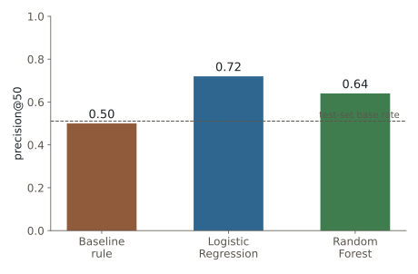
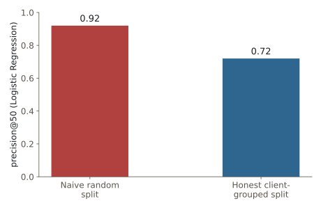
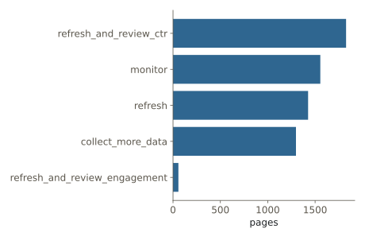
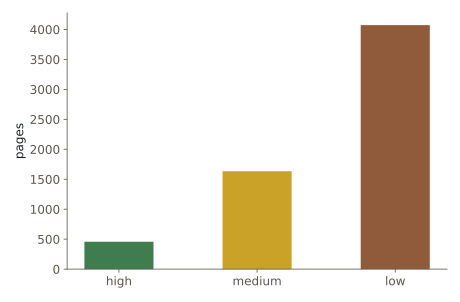
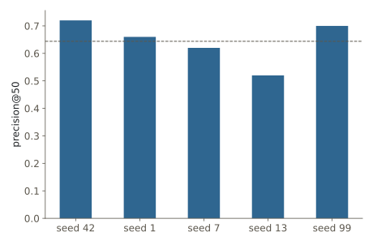

Research note · content prioritization · September 2026
A content team publishes far more pages than it can ever manually revisit, and some of those pages quietly lose visibility while still sitting on a good position — a page ranking on page one that a reviewer would never think to check without a nudge. This paper builds and honestly validates a scoring model that provides that nudge, using FlyRank's anonymized ML-internship starter dataset: 30,000 pseudonymized content pages across 32 clients, with trailing-90-day search performance metrics. A transparent CTR-vs-position rule baseline is compared against Logistic Regression and Random Forest under a client-grouped train/test split, so the evaluation never lets a model see a client's other pages before being tested on that same client. Under that honest split, Logistic Regression lifts precision@50 from 0.50 (the baseline) to 0.72 — a real, moderate improvement — while a naive random split on the identical model would have reported 0.92, quietly rewarding memorization instead of skill. The output is a ranked, human-reviewed action queue with reason codes and an explicit no-go list, built to support a content reviewer's judgment on exactly this kind of quietly-underperforming page, not replace it.
A content or SEO team publishes far more pages than it can ever manually review again. The question this project answers is narrow on purpose: out of thousands of already-live pages, which ones are worth a reviewer's limited time this week, and why?
This is not a hypothetical problem. It's the exact scenario FlyRank's own product exists to catch: a page that looks fine on the surface — decent position, real search demand — but is quietly failing to convert that visibility into clicks. A reviewer scanning a dashboard by traffic volume or by publish date would likely never flag it, because nothing about it looks broken at a glance. Here is one real, anonymized page from this project's held-out test set that illustrates exactly that failure mode:
A keyword-article page sits at an average position of 7.6 — solidly on page one — and drew 140,079 impressions in the trailing 90 days. By any traffic-volume ranking, this page looks healthy: high visibility, no obvious red flag. But its click-through rate is 0.01%, far below what a page-one result should convert, and it was updated only 20 days ago — so "hasn't been touched in a while" isn't the story either. The model scores this page at 0.91 probability of being in decline, and the playbook's reason codes point squarely at a CTR/title problem, not a staleness one.
low_ctr_visible_page, model_high_riskrefresh_and_review_ctrA reviewer (or their team lead) uses the model's output as a ranked queue built for exactly this kind of page: pick the top N, read the reason code attached to each, and decide on an action — refresh the copy, fix a title, or leave it and keep monitoring. Getting this wrong has an asymmetric cost. Flagging a page that didn't need attention wastes an hour or two of review time. Missing a real, already-declining page — like the one above, sitting in plain sight on page one — lets it keep losing visibility for weeks before anyone notices, a compounding, more expensive mistake. The scoring approach below is built with that asymmetry in mind: it aims to put real decliners near the top of the queue, not just to maximize overall accuracy.
This project uses the starter dataset shipped with the FlyRank ML internship:
content_refresh_anonymized.csv — 30,000 pseudonymized content items across
44 columns and 32 pseudonymized clients, each row a trailing-90-day snapshot of one content
page's search performance (impressions, clicks, CTR, position, engagement, freshness, and
keyword-difficulty fields). It is a single snapshot, not a repeated time series per page, so a
genuine time-based train/test split isn't available in this slice.
FlyRank also publishes a larger, ~79-million-row warehouse release with daily granularity, which would support a true future-window label (train on one period, predict the next) instead of the current-window proxy used here. That release was scoped out of this capstone for time reasons and is named directly in the Limitations below, rather than left unmentioned.
trend_direction and trend_pct — these define the label
itself. Using them as model inputs would be circular.content_id and client_id — pseudonyms, used only to
group the train/test split, never as features.health_score, priority_score,
is_quick_win, etc.) exist in this starter file at all — confirmed
directly by scanning every column name.Every field in this release is already pseudonymized by FlyRank before publication: no client names, raw query text, or URLs appear anywhere in this dataset, this paper, or its source notebooks — including the case study above, which uses only anonymized metrics, no page identifiers.
is_declining_label = (trend_direction == "down") — a
current-window proxy, not a future outcome. trend_direction
itself summarizes the last 30 days of impressions against the 30 days before that. The model
below answers "is this page currently trending down," not "will it decline
next" — a real limit, named here and revisited in Limitations.
18 numeric fields (log-transformed volume metrics, CTR, position, engagement, content age
and freshness, word count, keyword difficulty) plus 8 one-hot encoded categorical fields
— 53 columns after encoding. Two missingness flags
(has_search_volume, has_word_count) were added rather than silently
filling with zero, since missingness in this dataset follows content type and a blind fill
would inject a fake category signal.
A transparent rule, not a fitted model: flag a page as worth a CTR/title review when it's
visible (impressions_90d ≥ 500, real position data) and its
click-through rate sits below the median CTR of other visible pages in its own position tier;
rank flagged pages by impression volume. This rule follows directly from an earlier signal
check on this same data, which confirmed CTR tracks position tier closely, but found that raw
page staleness alone does not reliably predict decline — the stalest bucket in
that check showed a slightly lower decline rate than average, so staleness was
deliberately left out of the rule rather than folded in anyway.
Logistic Regression, then Random Forest — starting with the simplest, most interpretable option and only reaching for a less transparent model once the simple one has been given a fair chance.
Train/test split is grouped by client_id (80/20, one fixed random seed for the
headline numbers), not a random row split. client_id groups
pages that share a brand, CMS, and editorial team; a random row split lets a model see 90% of
a client's pages during training and then "solve" its own test set by recognizing that
client's quirks, not by learning anything that generalizes. Concretely: a naive random split
leaves 31 of the portfolio's 32 clients present on both sides of train/test. The
client-grouped split used everywhere below leaves zero client overlap (25
training clients, 7 entirely held-out test clients).
Two confession tests confirm the check itself works: injecting trend_pct (the
label's own numerator) as a feature lifts Logistic Regression's ROC AUC from 0.615 to 0.999,
and injecting a literal copy of the label hits 1.000 — both near the ceiling a true leak
should produce, and neither column is anywhere in the real feature set. The model's actual top
feature, a page's count of "quiet" days in the last 90, was tested the same way: removing it
barely moves Logistic Regression's score at all, confirming it's a real, replaceable signal,
not a disguised copy of the answer. A column-name scan found no FlyRank product-flag features
to accidentally reuse.
All three approaches — baseline rule, Logistic Regression, Random Forest — are scored on the identical client-grouped test split: 7 held-out clients the models never trained on, a test-set base rate of 0.511. The baseline's own CTR-tier thresholds are fit on training clients only, then applied to the held-out clients — the same discipline required of the fitted models. The headline metric is precision@50: of the top 50 pages a method puts at the front of the queue, how many are really declining. This metric was chosen because the real action is "a person reviews a short, capacity-limited list," not "rank all 30,000 pages perfectly."
| Method | ROC AUC | Precision@50 | Precision | Recall | F1 |
|---|---|---|---|---|---|
| Baseline rule | 0.538 | 0.50 | 0.600 | 0.271 | 0.373 |
| Logistic Regression | 0.615 | 0.72 | 0.588 | 0.622 | 0.605 |
| Random Forest | 0.607 | 0.64 | 0.588 | 0.598 | 0.593 |

The same Logistic Regression model, on the same features, evaluated under a naive random split instead of the honest client-grouped one, reports precision@50 of 0.92 — not because the model is better, but because a random split leaves most clients' pages on both sides of train and test, letting the model partly recognize what it already saw.

Across five different client-grouped reseeds of this same 32-client dataset, Logistic Regression's precision@50 ranged from 0.52 to 0.72 (mean 0.64). Read 0.72 as one honest draw from a real range, not a fixed constant this exact model will always hit on a new client roster.
The playbook below reuses the same honest, client-grouped Logistic Regression from Section 4, scored on the 7 held-out clients as a stand-in for "a brand-new client's queue," with transparent, threshold-based reason codes layered on top of the model's probability — never the probability alone.
| Archetype (reason code) | Action | Why a reviewer trusts it |
|---|---|---|
sparse_data | collect_more_data | Fewer than 20 impressions/90d means almost every feature is near-zero — not enough signal either way. |
thin_visible_page | expand_and_refresh | Real traffic, under 1,200 words — the gap looks like depth, not staleness. |
low_ctr_visible_page | refresh_and_review_ctr | Good position, weak clicks — likely a title or snippet problem (the case study above). |
low_engagement + declining | refresh_and_review_engagement | Traffic arrives but doesn't stick, and the trend is down. |
stale / declining / decay_risk | refresh | Visible, aging or trending down, no single sharper cause. |
| none of the above | monitor | Nothing urgent flagged; check back next cycle. |


confidence alongside the reason code, not the score alone.sparse_data rows as "safe" — they are unscored, not
reassuring.Recompute the queue every reporting cycle regardless — a 90-day-window model scored against month-old data is already looking at a different reality than the one it was fit on. Retrain, at minimum, on any of: the realized hit rate on acted-on pages falling well below the observed 0.52–0.72 range; the portfolio's overall decline rate (currently 54.2%) shifting sharply; the client roster growing enough to justify a bigger, more stable honest split; or a full quarter passing without a refresh.

Every number in this paper traces back to an executed notebook in the linked repository.
Random seeds are fixed (random_state=42 for headline numbers; seeds 1, 7, 13, 99
for the split-variance check) and printed inline in each notebook's own output.
flyrank-ml-internshipw01_research_question.ipynbw04_baseline_score.ipynbw05_model.ipynbw06_validation_audit.ipynbw07_action_playbook.ipynbcapstone.ipynbcapstone.ipynb (closing cells)capstone_metrics.jsonThe ranked queue CSV itself is intentionally not committed to the repository — it
regenerates from w07_action_playbook.ipynb on every run, and the repository's own
CI blocks committed data files by design, so the notebooks are the source of truth rather than
a static export.